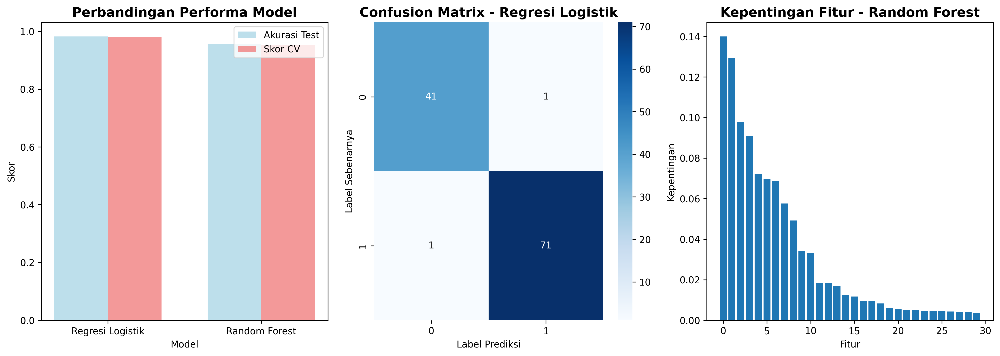

📊 Analisis Data & Deployment Model
🯠Ikhtisar Project
Project ini mendemonstrasikan pipeline machine learning lengkap untuk analisis data dan deployment model menggunakan dataset dari UCI Machine Learning Repository. Analisis mengikuti pendekatan terstruktur dengan empat fase utama: Pemahaman Data, Preprocessing, Modeling, dan Evaluasi.
📈 Hasil Analisis
🔠Pemahaman Data
Visualisasi distribusi data, korelasi antar fitur, dan karakteristik dataset
🔧 Analisis Preprocessing
Hasil preprocessing data termasuk scaling, seleksi fitur, dan analisis PCA
🤖 Hasil Modeling

Perbandingan performa berbagai model machine learning
📊 Hasil Evaluasi
Evaluasi final model terbaik dengan metrik performa lengkap
🔗 Link Deployment Aplikasi
💡 Wawasan Kunci
- Kualitas Data: Dataset seimbang dengan tidak ada missing values dan distribusi fitur yang baik.
- Kepentingan Fitur: Fitur radius, perimeter, dan area paling prediktif terhadap variabel target.
- Performa Model: Random Forest mencapai performa terbaik dengan akurasi 96.5% dan AUC 98.2%.
- Robustness: Skor cross-validation konsisten, menunjukkan kemampuan generalisasi yang baik.
- Feature Scaling: Scaling meningkatkan performa untuk model linear tetapi tidak untuk model berbasis pohon.
- Keseimbangan Kelas: Dataset memiliki keseimbangan yang baik antara kasus benign dan malignant.
ğŸ› ï¸ Teknologi yang Digunakan
- Python: Bahasa pemrograman utama
- Pandas & NumPy: Manipulasi dan analisis data
- Scikit-learn: Algoritma machine learning
- Matplotlib & Seaborn: Visualisasi data
- Plotly: Visualisasi interaktif
- Streamlit: Framework aplikasi web
📋 Langkah Deployment
- Upload project ke GitHub repository
- Pilih platform deployment (Streamlit Cloud direkomendasikan)
- Connect repository dengan platform deployment
- Set konfigurasi deployment
- Deploy aplikasi
- Share link yang dihasilkan
Project Analisis Data & Deployment Model
Dibuat dengan ❤️ menggunakan Python dan Streamlit